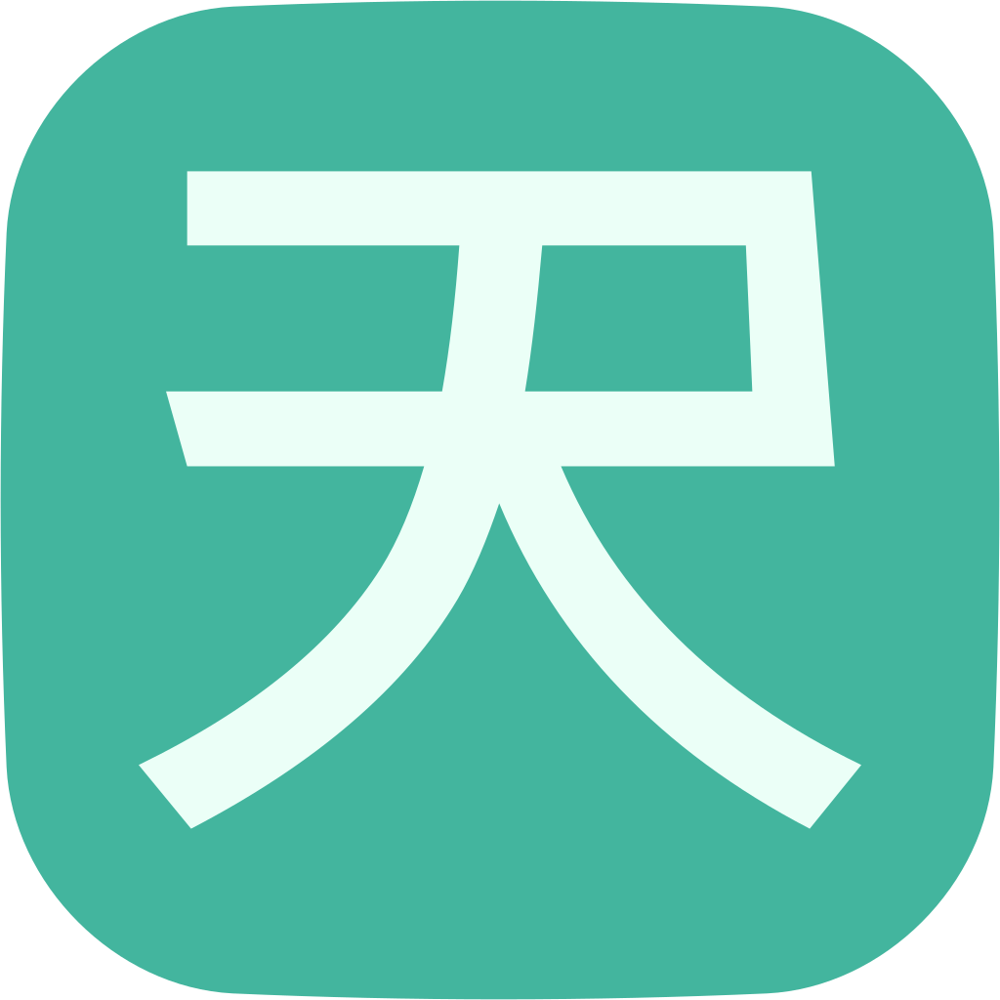
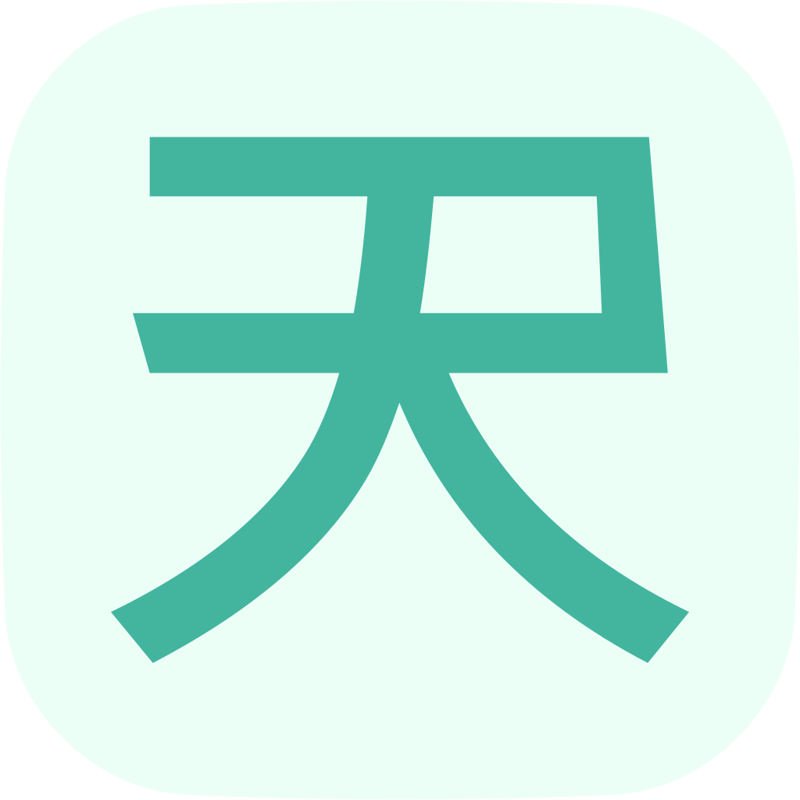
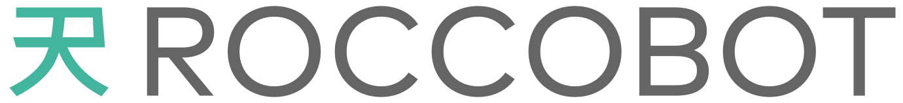
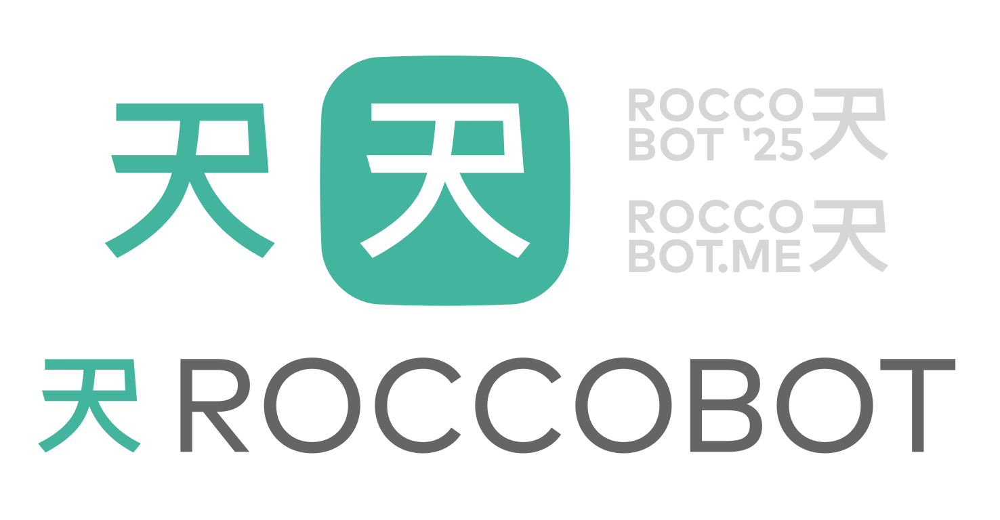
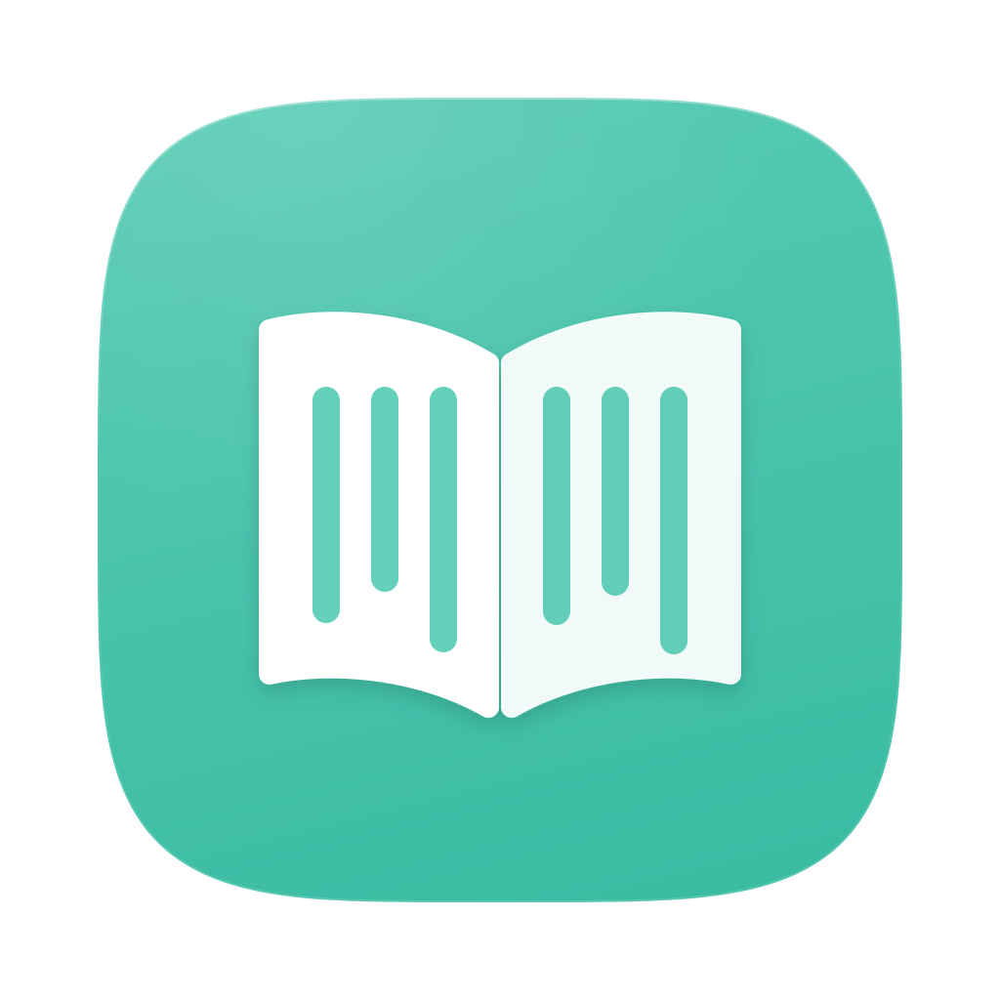
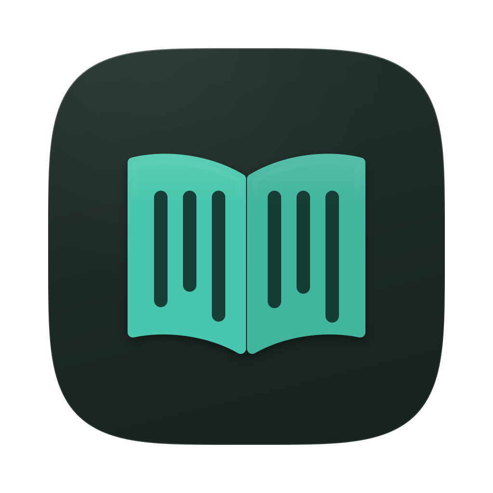

Rocco Casadei, a.k.a. Roccobot
Design System
Le regole visive e di scrittura del marchio personale di Roccobot, graphic designer e fotografo: le app AIV e Aomidori, il sito fotografico, le pagine e i documenti che portano il suo nome.
The visual and writing rules of the personal brand of Roccobot, graphic designer and photographer: the AIV and Aomidori apps, the photography site, and the pages and documents that bear his name.
Come si usaHow to use it
Una fonte solaOne single source
Questa pagina è l'unica fonte del design system. Accanto a lei, nella stessa cartella, ci sono i file per gli agenti e per il codice: i token (tokens.json), da cui la pagina prende ogni valore, il manuale (README.md, e in inglese README.en.md), le schede dei componenti delle app, i file del marchio e dell'icona di AIV, e il generatore che costruisce la pagina. Chi disegna usa la pagina; chi scrive codice usa il token, mai il valore copiato.
This page is the only source of the design system. Next to it, in the same folder, are the files for agents and for code: the tokens (tokens.json), where the page takes every value from, the manual (README.en.md, and in Italian README.md), the app component sheets, the files of the mark and of the AIV icon, and the generator that builds the page. Designers use the page; developers use the token, never a copied value.
La pagina segue il tema del sistema e si apre in italiano. Il tasto T inverte il tema e il tasto L passa all'inglese, da qualunque punto, salvo mentre si scrive in un campo di testo; i due pulsanti in alto a destra fanno lo stesso. Così ogni colore si vede sul suo fondo vero, nel tema chiaro e in quello scuro.
The page follows the system theme and opens in Italian. The T key flips the theme and the L key switches the language, from anywhere except while typing in a text field; the two buttons at the top right do the same. This way every color is seen on its real background, in the light and the dark theme.
ColoreColor
I due accenti primariThe two primary accents
Turchese e petrolio sono la firma del marchio, e si completano: il turchese si legge sullo sfondo scuro, il petrolio su quello chiaro. Insieme coprono i due temi.
Turquoise and petrol are the signature of the brand, and they complete each other: turquoise reads on the dark background, petrol on the light one. Together they cover both themes.
- Sullo sfondo chiaroOn the light background
- 2,432.43sotto 3:1below 3:1
- Sullo sfondo scuroOn the dark background
- 6,936.93AAAA
Sullo sfondo chiaro è grafica e superficie, su quello scuro si legge anche come testo. È il colore del marchio e del fondo dell'icona di AIV.On the light background it is graphics and surface, on the dark one it also reads as text. It is the color of the mark and of the AIV icon background.
- Sullo sfondo chiaroOn the light background
- 5,505.50AAAA
- Sullo sfondo scuroOn the dark background
- 3,073.07AAAA
Sullo sfondo chiaro si legge anche come testo, su quello scuro è grafica e superficie. È il fondo dell'icona di AIV nel tema scuro.On the light background it also reads as text, on the dark one it is graphics and surface. It is the AIV icon background in the dark theme.
Il turchese è anche il colore di Aomidori, il cui nome vuol dire turchese in giapponese, ed è quasi identico all'accento del sito roccobot.me (hsl(170, 46%, 49%)). Per un testo d'accento si usa sempre testo-accento, che vale 6,21 sullo sfondo chiaro e 9,97 su quello scuro.
Turquoise is also the color of Aomidori, whose name means turquoise in Japanese, and it is almost identical to the accent of the roccobot.me site (hsl(170, 46%, 49%)). Accent text always uses testo-accento, at 6.21 on the light background and 9.97 on the dark one.
MarchioMark
Il marchioThe mark
Il segno personale di Roccobot, disegnato come tracciato. Si usa sempre dal file originale.
Roccobot's personal sign, drawn as a path. It is always used from the original file.
Centratura ponderataWeighted centering
Si centra il quadrato ideale del segno, e non il riquadro del disegno: alcuni tratti ne escono, ed è così che il glifo risulta centrato all'occhio. In una piastrella il quadrato ideale occupa il 58,5% del lato, in larghezza e in altezza. È il riferimento ufficiale, e vale per icone, piastrelle e ogni riquadro che contiene il marchio.
Center the ideal square of the sign, not the box of the drawing: some strokes stick out of it, and that is how the glyph looks centered to the eye. In a tile the ideal square takes 58.5% of the side, in width and in height. It is the official reference, and it applies to icons, tiles and any box that holds the mark.
Non si toccaHands off
Il tracciato non si modifica mai: non si ridisegna, non si arrotonda, non si deforma e non si uniforma ad altri glifi. Si cambia soltanto il colore, fra quelli di questa sezione.
The path is never modified: never redrawn, rounded, distorted or matched to other glyphs. Only its color changes, among the ones in this section.
Area di rispettoClear space
Intorno al quadrato ideale resta libero almeno un decimo della sua altezza, su tutti e quattro i lati.
At least a tenth of the ideal square's height stays clear around it, on all four sides.
Misura minimaMinimum size
16 px sullo schermo; sotto i 24 px solo sui fondi a contrasto pieno. L'unica eccezione sono alcune favicon più piccole, anche se si leggono meno bene.
16 px on screen; below 24 px only on full-contrast backgrounds. The only exception is a few smaller favicons, even though they read less well.
IconaIcon
L'icona di RoccobotThe Roccobot icon
Il segno sulla piastrella a supercerchio, in due versioni: menta su turchese, e l'inversa, turchese su menta. Si usa sempre dal file originale.
The sign on the supercircle tile, in two versions: mint on turquoise, and the inverse, turquoise on mint. Always use it from the original file.

#EBFFF7 su turchese #43B59E.PositiveMint #EBFFF7 on turquoise #43B59E.
La piastrella è un supercerchio disegnato nel file, e non un quadrato con gli angoli arrotondati: non si rifà con un border-radius e non si ritaglia. L'inversa scambia i due colori e nient'altro. I file sono in design/assets/icon/.
The tile is a supercircle drawn in the file, not a square with rounded corners: never rebuild it with a border-radius, and never crop it. The inverse swaps the two colors and nothing else. The files are in design/assets/icon/.
LogotipoWordmark
Il logotipoThe wordmark
Il segno seguito dal nome, disegnato come tracciato, in tre versioni: per il fondo chiaro, per quello scuro e per il turchese.
The sign followed by the name, drawn as a path, in three versions: for the light background, for the dark one and for turquoise.


#FCFBF8 al 70%, segno turchese.On darkLetters in #FCFBF8 at 70%, turquoise sign.
#FCFBF8 al 70%, segno menta.On turquoiseLetters in #FCFBF8 at 70%, mint sign.Le lettere non prendono mai l'accento, e il segno non prende mai il colore delle lettere. I file sono in design/assets/wordmark/.
The letters never take the accent, and the sign never takes the color of the letters. The files are in design/assets/wordmark/.
Logo animatoAnimated logo
Il logo animatoThe animated logo
Il segno si disegna al centro, poi arriva il nome: 105 fotogrammi, pensati per un fondo scuro.
The sign draws itself in the center, then the name arrives: 105 frames, made for a dark background.
I file sono in design/assets/logo-anim/: roccobot-logo-frames.zip, i fotogrammi PNG trasparenti da 2048 × 480 px, come sono stati consegnati; roccobot-logo.mp4, il video in H.264 quasi senza perdite, sul fondo #151B1A; roccobot-logo-animated.webp, l'animazione trasparente per le pagine, una WebP animata senza perdite larga 1024 px. Sulla pagina, se il sistema chiede meno movimento, resta l'ultimo fotogramma.
The files are in design/assets/logo-anim/: roccobot-logo-frames.zip, the transparent 2048 × 480 px PNG frames, as delivered; roccobot-logo.mp4, the near-lossless H.264 video, on the #151B1A background; roccobot-logo-animated.webp, the transparent animation for pages, a lossless animated WebP 1024 px wide. On the page, when the system asks for less motion, the last frame stays.
Va a 24 fotogrammi al secondo, quindi dura 4,4 secondi. Il video in H.264 non ha il canale alfa, e per questo ha il fondo pieno.
It runs at 24 frames per second, so it lasts 4.4 seconds. The H.264 video has no alpha channel, so it has a solid background.
FiligranaWatermark
La filigranaThe watermark
Una fotografia la firma la filigrana, non il marchio: il segno col nome e l'anno, o col dominio, in grigio #BABABA al 60%, mai nell'accento.
A photograph is signed by the watermark, not by the mark: the sign with the name and the year, or with the domain, in gray #BABABA at 60%, never in the accent.

ROCCOBOT '25 e ROCCOBOT.ME.The identity sheetThe sign, the icon, the wordmark and the two watermarks, ROCCOBOT '25 and ROCCOBOT.ME.Il file è in design/assets/identity/.
The file is in design/assets/identity/.
Icone delle appApp icons
Le icone delle appThe app icons
AIV per AndroidAIV for Android
L'icona di AIV è la più rappresentativa del marchio: la A col disco solare, sui due accenti primari. Cambiano tutti e due i livelli fra i temi, glifo compreso. Il glifo si centra sulla piastrella e poi sale dell'8,33% della propria altezza: l'aggiustamento ottico porta il triangolo verso la punta.
The AIV icon is the most representative of the brand: the A with the sun disc, on the two primary accents. Both layers change between themes, glyph included. The glyph is centered on the tile and then raised by 8.33% of its own height: the optical adjustment moves the triangle toward its tip.
Menta #EBFFF7 su turchese #43B59E. Contrasto 2,42, sotto il 3:1 della grafica: è un'eccezione dichiarata.
Mint #EBFFF7 on turquoise #43B59E. Contrast 2.42, below the 3:1 for graphics: a declared exception.
Turchese luce #4FD9BE su petrolio #00727B, a 3,25.
Light turquoise #4FD9BE on petrol #00727B, at 3.25.
L'icona di un'app Android è adattiva: un quadrato pieno, col soggetto nella zona sicura e al 45% del lato circa, senza nessuna forma disegnata. Il ritaglio, tondo o a quadrato arrotondato come qui sopra, lo decide il telefono. Il disegno vive in ic_launcher_foreground.xml del repo di AIV, ed è quello di questa pagina, senza modifiche.
An Android app icon is adaptive: a full square, with the subject in the safe zone at about 45% of the side, and no drawn shape. The crop, round or a rounded square as above, is up to the phone. The drawing lives in ic_launcher_foreground.xml in the AIV repo, and it is the one on this page, unchanged.
Aomidori per macOSAomidori for macOS

La versione che macOS mostra col tema chiaro.
The version macOS shows in the light theme.

La versione che macOS mostra col tema scuro.
The version macOS shows in the dark theme.
L'icona di un'app per macOS è adattiva, in stile Liquid Glass: il sistema mostra la versione del tema in uso, e la forma della piastrella è disegnata nel file. Questi sono i file della pagina di download di Aomidori, in Aomidori/assets/ dell'hub, copiati senza modifiche dal repo dell'app.
A macOS app icon is adaptive, in the Liquid Glass style: the system shows the version for the current theme, and the tile shape is drawn in the file. These are the files of the Aomidori download page, in the hub's Aomidori/assets/, copied unchanged from the app repo.
ColoreColor
Tutti i coloriAll colors
Ogni token ha il campione del tema chiaro e quello del tema scuro, affiancati; un token con un campione solo vale uguale nei due temi.
Every token shows its light and dark theme swatches side by side; a token with one swatch is the same in both themes.
- a sinistra, chiaroleft, light
- a destra, scuroright, dark
AccentiAccents
- #43B59E
turchesePrimo accento primario: il colore del marchio, il fondo dell'icona di AIV nel tema chiaro, l'accento del tema chiaro. Contrasto 6,93 sullo sfondo scuro, 2,43 su quello chiaro: nel tema chiaro solo grafica e superfici, mai testo (eccezione dichiarata).First primary accent: the color of the mark, the background of the AIV icon in the light theme, the accent of the light theme. Contrast 6.93 on the dark background, 2.43 on the light one: in the light theme only graphics and surfaces, never text (a declared exception).
- #00727B
petrolioSecondo accento primario: il fondo dell'icona di AIV nel tema scuro, l'accento del tema scuro. Contrasto 5,50 sullo sfondo chiaro, 3,07 su quello scuro: nel tema scuro solo grafica e superfici.Second primary accent: the background of the AIV icon in the dark theme, the accent of the dark theme. Contrast 5.50 on the light background, 3.07 on the dark one: in the dark theme only graphics and surfaces.
- #43B59E#00727B
accentoL'accento del tema, cioè il colore dell'icona: pulsanti pieni, selezioni, superfici d'accento. Mai per il testo: per quello c'è testo-accento.The accent of the theme, that is, the color of the icon: filled buttons, selections, accent surfaces. Never for text: that is what testo-accento is for.
- #00382F#FFFFFF
contenuto-su-accentoIl contenuto sopra l'accento pieno, cioè testo, glifi e marchio: 5,19 sul turchese, 5,69 sul petrolio. È il ruolo che Material 3 chiama on primary.The content on the filled accent, that is text, glyphs and the mark: 5.19 on turquoise, 5.69 on petrol. It is the role Material 3 calls on primary.
- #0B6B5B#4FD9BE
testo-accentoL'accento da leggere: collegamenti, valori evidenziati, titoli d'accento. 6,21 sullo sfondo chiaro, 9,97 su quello scuro.The accent you read: links, highlighted values, accent headings. 6.21 on the light background, 9.97 on the dark one.
- #43B59E
marchioIl colore del marchio in tutti e due i temi, come in RoccoHub (hub/ dell'hub): 6,93 sullo sfondo scuro; su quello chiaro è grafica, a 2,43.The color of the mark in both themes, as on RoccoHub (the hub's hub/ page): 6.93 on the dark background; on the light one it is graphics, at 2.43.
Fondi e superficiBackgrounds and surfaces
- #FCFBF8#151B1A
fondoFondo delle schermate e delle pagine (Theme.kt di AIV); il fondo di partenza della finestra lo segue, per non avere un lampo all'apertura.The background of screens and pages (AIV's Theme.kt); the window's starting background follows it, so there is no flash when it opens.
- #FFFEFC#1E2523
superficieSchede, pannelli e dialoghi sopra il fondo.Cards, panels and dialogs above the background.
- #EDECE8#333B39
superficie-altaIl gradino più alto delle superfici (surfaceContainerHighest di AIV): campi, righe evidenziate, campioni.The highest step of the surfaces (AIV's surfaceContainerHighest): fields, highlighted rows, swatches.
- #2E3836
fondo-intermedioIl fondo del tema scuro delle pagine di servizio, a metà fra chiaro e scuro (RoccoHub, hub/ dell'hub): il marchio turchese ci legge a 4,81.The background of the dark theme of service pages, halfway between light and dark (RoccoHub, the hub's hub/ page): the turquoise mark reads at 4.81 on it.
- #3B4744
scheda-intermediaLe schede sopra fondo-intermedio.Cards on fondo-intermedio.
Testo e lineeText and lines
- #1A1C1B#E4E9E7
testoIl testo corrente: 16,55 sullo sfondo chiaro, 14,21 su quello scuro.Body text: 16.55 on the light background, 14.21 on the dark one.
- #5B6360#A9B3B0
testo-secondarioNote, didascalie e spiegazioni (onSurfaceVariant di AIV): 5,97 sullo sfondo chiaro, 8,11 su quello scuro.Notes, captions and explanations (AIV's onSurfaceVariant): 5.97 on the light background, 8.11 on the dark one.
- #79817D#8A9490
contornoIl bordo dei controlli (outline di AIV): 3,87 sullo sfondo chiaro, 5,58 su quello scuro, sopra il 3:1 della grafica.The border of controls (AIV's outline): 3.87 on the light background, 5.58 on the dark one, above the 3:1 for graphics.
- #DAD9D5#3C4442
lineaSeparatori e bordi decorativi (outlineVariant di AIV), che non portano informazione.Dividers and decorative borders (AIV's outlineVariant), which carry no information.
Tavolozza di AomidoriAomidori palette
- #4FD9BE
turchese-luceDella tavolozza di Aomidori: il testo d'accento del tema scuro e il glifo dell'icona di AIV nel tema scuro.From the Aomidori palette: accent text in the dark theme and the AIV icon glyph in the dark theme.
- #EBFFF7
menta-chiaroDella tavolozza di Aomidori: il glifo dell'icona di AIV nel tema chiaro, fondi tenui e riquadri d'accento chiaro.From the Aomidori palette: the AIV icon glyph in the light theme, soft backgrounds and light accent boxes.
- #4E6367
ardesiaDella tavolozza di Aomidori: testo secondario e contorni su fondo chiaro (6,14).From the Aomidori palette: secondary text and borders on a light background (6.14).
- #43B59E#5FD4BC
glifo-marchioIl glifo di Aomidori: il tono leggermente più scuro sul tema chiaro, quello leggermente più chiaro sullo scuro.The Aomidori glyph: the slightly darker tone on the light theme, the slightly lighter one on the dark theme.
Icone e tastiIcons and buttons
- #43B59E#00727B
icona-aiv-fondoIl fondo dell'icona di AIV (launcher_background nei due values/ dell'app).The background of the AIV icon (launcher_background in the app's two values/ folders).
- #EBFFF7#4FD9BE
icona-aiv-glifoIl glifo dell'icona di AIV (launcher_foreground): 2,42 sullo sfondo chiaro, 3,25 su quello scuro: eccezioni dichiarate.The glyph of the AIV icon (launcher_foreground): 2.42 on the light background, 3.25 on the dark one: declared exceptions.
- #ECFFF7#004247
glifo-tondo-traslucidoIl glifo del tasto principale quando il tasto è traslucido (AIV, dalla 7.30).The glyph of the main button when the button is translucent (AIV, since 7.30).
Veli e aiutiScrims and help
- #0000004D#FFFFFF4D
veloIl velo dietro i pannelli, al 30%: nero nel tema chiaro, bianco in quello scuro, insieme alla sfocatura di 12 dp.The scrim behind panels, at 30%: black in the light theme, white in the dark one, together with the 12 dp blur.
- #000000B3
velo-aiutoIl velo dei veli d'aiuto (HINT_SCRIM di AIV).The scrim of help overlays (AIV's HINT_SCRIM).
- #FFA726
aiuto-arancioIl riquadro di un velo d'aiuto (HINT_MARK); il testo sopra di lui usa aiuto-arancio-inchiostro.The box of a help overlay (HINT_MARK); text on it uses aiuto-arancio-inchiostro.
- #3E2600
aiuto-arancio-inchiostroTesto sull'arancio dei veli d'aiuto.Text on the orange of help overlays.
- #FFDA3C
aiuto-tastoIl tasto da toccare in un velo d'aiuto (HINT_KEY).The key to tap in a help overlay (HINT_KEY).
- #643A00
aiuto-tasto-inchiostroTesto e glifo sul giallo del tasto d'aiuto.Text and glyph on the yellow of the help key.
Come si aggiunge un coloreHow to add a color
- Si stabilisce il suo ruolo: azione, struttura o testo. Un elemento nuovo prende il colore del suo ruolo, non quello che sta meglio nel punto in cui capita.
- Si sceglie il valore nei due temi, mai guardandone uno solo.
- Si misura il contrasto sul fondo peggiore in cui quel colore capita, che è il fondo vero del componente.
- Si controlla la distanza di tinta dai colori che possono capitargli accanto: un titolo colorato resta ad almeno 20 gradi dalla tinta dei collegamenti, o si legge come un collegamento.
- Se resta sotto soglia, o si corregge o diventa un'eccezione dichiarata, col numero e la ragione, approvata dal titolare.
- Si scrive in questo design system, e solo dopo nel codice.
- Decide its role: action, structure or text. A new element takes the color of its role, not the one that looks best where it happens to sit.
- Pick the value in both themes, never looking at only one.
- Measure the contrast on the worst background the color can land on, which is the component's real background.
- Check the hue distance from the colors that can sit next to it: a colored heading stays at least 20 degrees away from the link hue, or it reads as a link.
- If it stays below the threshold, either fix it or make it a declared exception, with the number and the reason, approved by the owner.
- Write it in this design system first, and only then in the code.
AccessibilitàAccessibility
Contrasti misuratiMeasured contrast
Il testo vuole 4,5:1, la grafica (icone, bordi dei controlli, anelli di fuoco) 3:1. Un'eccezione la approva il titolare, col numero dichiarato.
Text needs 4.5:1, graphics (icons, control borders, focus rings) 3:1. The owner approves any exception, with its number stated.
| CoppiaPair | UsoUse | ChiaroLight | ScuroDark |
|---|---|---|---|
testo suon fondo | testotext | 16,5516.55AAAA | 14,2114.21AAAA |
testo-secondario suon fondo | testotext | 5,975.97AAAA | 8,118.11AAAA |
testo-accento suon fondo | testotext | 6,216.21AAAA | 9,979.97AAAA |
testo-accento suon superficie | testotext | 6,376.37AAAA | 8,938.93AAAA |
contenuto-su-accento suon accento | testotext | 5,195.19AAAA | 5,695.69AAAA |
accento suon fondo | graficagraphics | 2,432.43sotto 3:1below 3:1 | 3,073.07AAAA |
contorno suon fondo | graficagraphics | 3,873.87AAAA | 5,585.58AAAA |
icona-aiv-glifo suon icona-aiv-fondo | graficagraphics | 2,422.42sotto 3:1below 3:1 | 3,253.25AAAA |
TipografiaTypography
CaratteriTypefaces
Archivo per il marchio e le pagine web, Roboto per le app, Roboto Flex per la lettura, Noto Serif per versi e citazioni, JetBrains Mono per il codice. Tutti gratuiti e open source.
Archivo for the brand and web pages, Roboto for the apps, Roboto Flex for reading, Noto Serif for verse and quotations, JetBrains Mono for code. All free and open source.
Web e marchio (Archivo, da Google Fonts)Web and mark (Archivo, from Google Fonts)
Archivo, "Helvetica Neue", Arial, sans-serif
Immagini, libri e paroleImages, books and words
Il titolo d'apertura di una pagina o di una copertina, uno solo per pagina. Peso 500.The opening title of a page or a cover, one per page. Weight 500.
Il marchioThe mark
Il titolo di una sezione di una pagina web. Peso 500.The title of a section of a web page. Weight 500.
Astonishing Image ViewerAstonishing Image Viewer
Il titolo di una scheda (RoccoHub: 1,2 rem).The title of a card (RoccoHub: 1.2 rem).
Gestore di immagini avanzato per Android.Advanced image manager for Android.
Il testo corrente delle pagine web (RoccoHub: 17 px, interlinea 1,5).Body text of web pages (RoccoHub: 17 px, line height 1.5).
PAGINA DI SERVIZIOSERVICE PAGE
L'occhiello in maiuscolo sopra un titolo (RoccoHub: 12 px, spaziatura 0,08 em), nel colore testo-accento.The uppercase kicker above a title (RoccoHub: 12 px, letter spacing 0.08 em), in testo-accento.
Interfaccia delle app (scala di Material 3, che AIV non sovrascrive)App interface (the Material 3 scale, which AIV doesn't override)
Roboto, system-ui, sans-serif
ImpostazioniSettings
Titolo di una schermata o di una pagina delle impostazioni.The title of a screen or of a settings page.
Posizione preferita dei pulsantiPreferred button position
La voce di un elenco o di un'impostazione.An item of a list or a setting.
Il glifo si adatta al tema della pagina.The glyph follows the page's theme.
Testo corrente dell'interfaccia.Body text of the interface.
Si apre accanto al pollice che usi di più.Opens next to the thumb you use most.
La spiegazione sotto una voce delle impostazioni.The explanation under a settings item.
SegnalibriBookmarks
L'etichetta breve sotto un'icona, come nelle celle del menu Start.The short label under an icon, as in the cells of the Start menu.
Lettura e codiceReading and code
"Roboto Flex", Roboto, sans-serif
Era una notte buia e tempestosa.It was a dark and stormy night.
Il testo di lettura di Aomidori, scritto dagli stili (Aomidori Flex e derivati) in Roboto Flex.The reading text of Aomidori, set by the styles (Aomidori Flex and its variants) in Roboto Flex.
Nel mezzo del cammin di nostra vitaMidway upon the journey of our life
Versi e citazioni in Noto Serif, al posto di Georgia.Verse and quotations in Noto Serif, instead of Georgia.
#43B59E#43B59E
Codice e valori tecnici, in JetBrains Mono come negli stili di Aomidori.Code and technical values, in JetBrains Mono as in Aomidori's styles.
Le app seguono la scala dei caratteri di Android; la pagina di Aomidori ignora la scala di sistema e ha la sua dimensione del testo, fino al triplo di quella di partenza.
The apps follow Android's font scale; the Aomidori page ignores the system scale and has its own text size, up to three times the starting one.
FormaShape
Spazi, raggi e misureSpacing, radii and sizes
Il passo di base è 8: le distanze ne sono multipli. Le misure delle app sono in dp di Android, e qui 1 px vale 1 dp.
The base step is 8: distances are multiples of it. App sizes are in Android dp, and here 1 px equals 1 dp.
SpaziSpacing
passo-griglia8pxIl passo di base (GRID_PAD_X di AIV): le distanze ne sono multipli.The base step (AIV's GRID_PAD_X): distances are multiples of it.
spazio-216pxDue passi: il margine laterale minimo di una pagina web e l'aria interna di una scheda.Two steps: the minimum side margin of a web page and the inner padding of a card.
spazio-324pxTre passi: la distanza del Tondo dal fianco e lo stacco fra due blocchi.Three steps: the distance of the Tondo from the side and the gap between two blocks.
spazio-648pxSei passi: lo stacco fra due sezioni di una pagina web.Six steps: the gap between two sections of a web page.
tondo-basso16pxDistanza del tasto principale dal fondo dello schermo.Distance of the main button from the bottom of the screen.
tondo-fianco24pxDistanza del tasto principale e delle pillole dal fianco dello schermo (3 passi di griglia).Distance of the main button and of the pills from the side of the screen (3 grid steps).
aria-dialogo16pxAria minima intorno a un dialogo centrato, che si trova il 15% più in basso del centro.Minimum space around a centered dialog, which sits 15% below the center.
RaggiRadii
raggio-miniatura8pxAngoli di una miniatura.Corners of a thumbnail.
raggio-scheda-web14pxAngoli di una scheda in una pagina web (RoccoHub).Corners of a card on a web page (RoccoHub).
raggio-pillola16pxRaggio di fabbrica della pillola di comandi di AIV.Default radius of AIV's command pill.
raggio-scheda28pxAngoli in alto di una scheda che sale dal basso.Top corners of a bottom sheet.
raggio-start32pxAngoli del pannello del menu Start: metà dell'altezza di una cella.Corners of the Start menu panel: half the height of a cell.
raggio-pieno999pxPulsanti a pillola delle pagine web e il Tondo.Pill buttons of web pages, and the Tondo.
MisureSizes
tondo44pxIl diametro del tasto principale (Tondo), come i tasti della pillola di AIV.The diameter of the main button (Tondo), like the buttons of AIV's pill.
bersaglio-minimo48pxIl bersaglio minimo di un tocco; il Tondo resta di 44 a vista con una zona di tocco di 48 (Accesso-02). Sul web il minimo è 44.The minimum touch target; the Tondo stays 44 to the eye with a touch area of 48 (Accesso-02). On the web the minimum is 44.
cella-start-altezza64pxAltezza di una cella del menu Start, e lato del suo tasto.Height of a Start menu cell, and side of its button.
passo-start-colonne68pxIl passo orizzontale del menu Start: la distanza fra i centri di due icone vicine, uguale fra tutte le colonne.The Start menu's horizontal pitch: the distance between the centers of two neighboring icons, equal across all columns.
passo-start-righe68pxIl passo verticale del menu Start: la distanza fra i centri di due icone una sopra l'altra, uguale fra tutte le righe. L'ideale è che sia uguale al passo orizzontale.The Start menu's vertical pitch: the distance between the centers of two stacked icons, equal across all rows. Ideally it matches the horizontal pitch.
margine-start-lati28pxIl margine del pannello del menu Start a sinistra e a destra, dal bordo all'icona.The Start menu panel's left and right margin, from the edge to the icon.
margine-start-alto22.7pxIl margine del pannello del menu Start in alto, sull'inchiostro: dal bordo alle icone della prima fila. Vale per ogni forma del menu.The Start menu panel's top margin, measured on the ink: from the edge to the icons of the first row. It holds for every shape of the menu.
margine-start-basso19pxIl margine del pannello del menu Start in basso, sull'inchiostro: dalle etichette dell'ultima fila, il pezzo più in basso, al bordo. Vale per ogni forma del menu.The Start menu panel's bottom margin, measured on the ink: from the labels of the last row, the lowest piece, to the edge. It holds for every shape of the menu.
icona-start28pxIl lato dell'icona di una voce del menu Start.The side of a Start menu item's icon.
etichetta-start-inchiostro9.3pxDal fondo dell'icona al fondo dell'inchiostro della sua etichetta, nel menu Start: è il pezzo più in basso, su cui si misura il margine in fondo.From the bottom of the icon to the bottom of its label's ink, in the Start menu: it is the lowest piece, the one the bottom margin is measured to.
etichetta-start-spazio3pxLo spazio fra l'icona e la sua etichetta nel menu Start.The gap between an icon and its label in the Start menu.
etichetta-start-riga12pxL'altezza della riga dell'etichetta nel menu Start (corpo 10, che scende fino a 7 perché una parola lunga entri).The height of the label line in the Start menu (size 10, shrinking down to 7 so a long word fits).
etichetta-start-max56pxLa larghezza massima di un'etichetta del menu Start, centrata sotto l'icona: lascia almeno 8 fra l'etichetta e il bordo del pannello, e fra due etichette vicine.The maximum width of a Start menu label, centered under the icon: it leaves at least 8 between the label and the panel edge, and between two neighboring labels.
sfocatura-velo12pxLa sfocatura dietro i pannelli.The blur behind panels.
misura-testo40remLa larghezza massima del testo corrente sul web (RoccoHub), circa 65 caratteri.The maximum width of body text on the web (RoccoHub), about 65 characters.
scacchiera12pxIl lato di un quadretto della scacchiera dietro un'immagine trasparente: in un visualizzatore la trasparenza è un'informazione (AIV, CHECKER).The side of one square of the checkerboard behind a transparent image: in a viewer, transparency is information (AIV, CHECKER).
MovimentoMotion
MovimentoMotion
Le transizioni, il gesto Indietro e le animazioni di AIV, che sono le regole di casa. Nessun cambio di schermata è un taglio netto, e il gesto Indietro segue il dito.
AIV's transitions, Back gesture and animations, which are the house rules. No screen change is a hard cut, and the Back gesture follows the finger.
| MovimentoMotion | Durata e curvaDuration and curve | Come si usaHow it works |
|---|---|---|
Cambio di schermataScreen changecambio-schermata | 180 ms, FastOutSlowIn180 ms, FastOutSlowIn | Ogni cambio di schermata: quella che arriva entra in dissolvenza mentre quella che lascia esce, insieme. Mai un taglio netto.Every screen change: the arriving screen fades in while the leaving one fades out, together. Never a hard cut. |
VisualizzatoreViewervisualizzatore | 100 ms, FastOutSlowIn100 ms, FastOutSlowIn | L'entrata e l'uscita del visualizzatore, e solo loro: una dissolvenza di sola opacità.The viewer's entrance and exit, and only those: an opacity-only fade. |
Gesto IndietroBack gestureindietro | 180 ms col dito in fondo, lineare180 ms with the finger at the end, linear | Fuori dal visualizzatore: la stessa dissolvenza del cambio di schermata, guidata dal dito.Outside the viewer: the same fade as a screen change, driven by the finger. |
Indietro verso la miniaturaBack into the thumbnailindietro-miniatura | 300 ms, quartica in uscita300 ms, quartic ease-out | Dal visualizzatore alla griglia: la foto parte veloce, frena e si ferma esattamente sulla sua miniatura, e solo lì sfuma in tre fotogrammi.From the viewer to the grid: the photo starts fast, slows down and stops exactly on its thumbnail, and only there fades out in three frames. |
Indietro su un menuBack on a menuindietro-menu | fino al 90%; 100 ms se si annulladown to 90%; 100 ms if canceled | Un menu, la pillola o il menu Start aperti si piegano verso il punto da cui sono nati, fino al 90% come la schermata nell'animazione di Android; al rilascio si chiudono, e annullando tornano interi.An open menu, the pill or the Start menu fold toward the point they came from, down to 90% like the screen in Android's own animation; on release they close, and on cancel they come back whole. |
Velo dietro i pannelliScrim behind panelsvelo | 800 ms, CubicBezier(0.2, 0.6, 0.35, 1)800 ms, CubicBezier(0.2, 0.6, 0.35, 1) | Arriva dietro menu, dialoghi e schede insieme alla sfocatura; non scende finché un'altra superficie sta entrando.It arrives behind menus, dialogs and sheets together with the blur; it does not go down while another surface is coming in. |
Entrata di un menuMenu entrancemenu-entrata | 120 ms da scala 0,96, CubicBezier(0.2, 0, 0, 1)120 ms from scale 0.96, CubicBezier(0.2, 0, 0, 1) | Patina e sfocatura crescono col pannello.Scrim and blur grow with the panel. |
Uscita di un menuMenu exitmenu-uscita | 75 ms, lineare75 ms, linear | Una dissolvenza sola: pannello, sfocatura e velo insieme. Un'uscita lunga cadrebbe sulla composizione della schermata d'arrivo.A single fade: panel, blur and scrim together. A long exit would fall on the composition of the arriving screen. |
Curva FluidoFluido curvefluido | cubic-bezier(0.25, 1, 1, 1)cubic-bezier(0.25, 1, 1, 1) | La curva dei movimenti senza dito: parte a 4 volte la velocità media, rallenta sempre e arriva ferma, senza scatto finale. Fa il 30% della strada al 10% del tempo, il 56% al 25%, l'81% a metà. Letta all'indietro (1 - f(1 - t)) è la curva delle uscite: parte da ferma e accelera.The curve of motion with no finger: it starts at 4 times the average speed, keeps slowing down and arrives at rest, with no final jolt. It covers 30% of the way at 10% of the time, 56% at 25%, 81% halfway. Read backward (1 - f(1 - t)) it is the exit curve: it starts at rest and speeds up. |
Entrata della scheda in fondoBottom sheet entrancescheda-entrata | 332 ms, la curva Fluido; opaca in 110 ms332 ms, the Fluido curve; opaque in 110 ms | La scheda percorre la sua altezza: parte veloce e frena fino a fermarsi, e diventa opaca in un tempo suo, quando sta ancora salendo.The sheet travels its own height: it starts fast and brakes to a stop, and turns opaque in a time of its own, while it is still rising. |
Uscita della scheda in fondoBottom sheet exitscheda-uscita | 332 ms, la curva Fluido letta all'indietro; velo in 280 ms332 ms, the Fluido curve read backward; scrim in 280 ms | Speculare all'entrata: accelera e scende, con una breve dissolvenza negli ultimi 110 ms.The mirror of the entrance: it speeds up and slides down, with a short fade in the last 110 ms. |
Finestra con la tastieraWindow with the keyboardtastiera | 250 ms, la curva Fluido250 ms, the Fluido curve | Quando la tastiera compare o sparisce, la finestra scorre al suo nuovo posto, senza saltarci.When the keyboard appears or disappears, the window glides to its new place instead of jumping there. |
PillolaPillpillola | 160 ms, esponenziale160 ms, exponential | Apertura e chiusura: parte velocissima e rallenta.Opening and closing: it starts very fast and slows down. |
Menu StartStart menumenu-start | 110 ms, la curva della pillola110 ms, the pill's curve | Entra dal basso, dal suo angolo.It comes in from the bottom, from its corner. |
Tocco sul TondoTap on the Tondotocco-tondo | giù in 30 ms, su in 60, al 70%; × in 90 ms, colore in 55down in 30 ms, up in 60, to 70%; × in 90 ms, color in 55 | Il Tondo si stringe e torna, glifo compreso, e il glifo diventa una × mentre torna alla sua misura. Niente ombre: un rientro di pochi punti su una piastrella isolata non si vede, un movimento, un simbolo e un colore sì.The Tondo shrinks and comes back, glyph included, and the glyph turns into a × as it returns to size. No shadows: a few points of indent on an isolated tile cannot be seen, while motion, a symbol and a color can. |
Tondo che se ne vaTondo leavingtondo-congedo | 100 ms, una curva che parte veloce100 ms, a curve that starts fast | Andando dove il Tondo non c'è, si rimpicciolisce fino a sparire. Dura meno del cambio di schermata: più lungo, finirebbe sotto una dissolvenza che non lascia vedere niente.Going where there is no Tondo, it shrinks until it disappears. It is shorter than the screen change: any longer, it would end under a fade that lets nothing show. |
Salto in cima e in fondoJump to top and bottomsalto | 280 ms più 0,16 ms per pixel, al massimo 800280 ms plus 0.16 ms per pixel, at most 800 | La durata cresce con la corsa, con un tetto: oltre, una corsa lunghissima diventerebbe un'attesa.The duration grows with the distance, with a cap: past it, a very long run would become a wait. |
Assestamento dell'immagineImage settlingassestamento | 220 ms; col dito fermo la curva Fluido, col dito in movimento cubic-bezier(0.3, 0.3 x v, 0.3, 1)220 ms; with the finger still the Fluido curve, with the finger moving cubic-bezier(0.3, 0.3 x v, 0.3, 1) | La strisciata fra le foto e fra i video: se il dito si muove al distacco, la curva parte alla sua velocità (v è la velocità del dito divisa per quella media dell'animazione, fra 0 e 3), così la foto non riparte da ferma. A dito alzato l'immagine torna al suo posto: sotto i 150 ms circa sembra uno scatto, sopra i 300 sembra che l'app esiti. Lo stesso tempo vale per lo spostamento quando la barra delle info compare: è un cambio di spazio, non un evento da guardare.The swipe between photos and between videos: if the finger is moving when it lifts, the curve starts at its speed (v is the finger's speed divided by the animation's average speed, between 0 and 3), so the photo doesn't restart from rest. With the finger lifted the image goes back in place: under about 150 ms it looks like a jolt, over 300 the app seems to hesitate. The same time holds for the shift when the info bar appears: it is a change of space, not an event to watch. |
Sostituto che lascia il postoStand-in giving waysostituto | 150 ms150 ms | Da un sostituto a ciò che sostituisce: la miniatura che lascia il posto all'immagine piena, la copia che arriva tardi, la copertura di un video che lascia il primo fotogramma.From a stand-in to what it stands for: the thumbnail giving way to the full image, the copy that arrives late, a video's cover giving way to its first frame. |
Intestazione ferma a metàHeader stopped halfwayfascia-ferma | dopo 2.000 ms, in 250 msafter 2,000 ms, in 250 ms | Se lo scorrimento si ferma con l'intestazione chiusa a metà, dopo due secondi sparisce; trascinando verso l'inizio torna con la sua animazione.If scrolling stops with the header half closed, it disappears after two seconds; dragging toward the top brings it back with its own animation. |
Tondo durante la letturaTondo while readingtondo-lettura | dopo 2.000 ms, in 150 msafter 2,000 ms, in 150 ms | Sparisce leggendo; un tocco sulla pagina lo richiama, e lo scorrimento lo toglie subito.It disappears while reading; a tap on the page brings it back, and scrolling hides it at once. |
Copertina che torna ai recentiCover going back to recentscopertina-recenti | 300 ms300 ms | Il ritorno della copertina fra i recenti, in Aomidori.The cover going back among the recents, in Aomidori. |
AvvisiNoticesavvisi | 2.000 o 3.000 ms a schermo2,000 or 3,000 ms on screen | Due secondi per una riga che dice e basta, come l'avviso breve di Android; tre per l'esito di un'operazione sui file, quanto un avviso che offre 'Annulla'.Two seconds for a line that only informs, like Android's short toast; three for the outcome of a file operation, as long as a notice that offers 'Undo'. |
Pagine web: passaggio del mouseWeb pages: hoverweb-hover | 160 ms160 ms | Colori e bordi al passaggio del mouse. Con il movimento ridotto del sistema (prefers-reduced-motion) la transizione non c'è, e nemmeno lo scorrimento morbido.Colors and borders on hover. With the system's reduced motion (prefers-reduced-motion) there is no transition, and no smooth scrolling either. |
La curva FluidoThe Fluido curve
La curva dei movimenti senza dito: la scheda che sale dal basso, la finestra che scorre con la tastiera, la strisciata quando il dito si ferma prima di staccarsi. Parte a 4 volte la velocità media, rallenta sempre e arriva ferma, così non c'è uno scatto finale. Le uscite la leggono all'indietro: partono da ferme e accelerano.
The curve of motion with no finger: the sheet rising from the bottom, the window gliding with the keyboard, the swipe when the finger stops before lifting. It starts at 4 times the average speed, keeps slowing down and arrives at rest, so there is no final jolt. Exits read it backward: they start at rest and speed up.
La scheda di 332 ms, rallentata 5 volte.Speed over time, in multiples of the average (the dashed line).
The 332 ms sheet, slowed down 5 times.
La strisciata fra le foto usa la curva Fluido solo se il dito si ferma prima di staccarsi. Se il dito si muove, la curva parte alla sua velocità, così la foto non riparte da ferma: cubic-bezier(0.3, 0.3 x v, 0.3, 1), dove v è la velocità del dito divisa per quella media dell'animazione, fra 0 e 3. È una famiglia di curve, una per ogni v.
The swipe between photos uses the Fluido curve only if the finger stops before lifting. If the finger is moving, the curve starts at its speed, so the photo doesn't restart from rest: cubic-bezier(0.3, 0.3 x v, 0.3, 1), where v is the finger's speed divided by the animation's average speed, between 0 and 3. It is a family of curves, one for each v.
La strisciata di 220 ms, rallentata 5 volte.Each curve starts at the finger's speed, v (1, 2 and 3 on the axis), and arrives at rest; below 3 it speeds up before braking. The faintest one is the finger at rest, that is the Fluido curve.
The 220 ms swipe, slowed down 5 times.
Le regole del movimentoThe rules of motion
- Le opacità si moltiplicano. Un'animazione giocata sotto la dissolvenza di schermata si vede solo per la coda: quello che deve farsi vedere aspetta che la schermata sia arrivata, e quello che arriva con la schermata (uno sfondo, una fascia, il contenuto) resta fermo.
- La durata segue la distanza. Un tempo fisso per i passi corti; per una scheda che percorre la sua altezza un tempo più lungo, con la curva Fluido; per un salto lungo una durata che cresce con la corsa, con un tetto.
- L'uscita è più breve dell'entrata, o la sua copia speculare. Un menu entra in 120 ms ed esce in 75; la scheda in fondo esce con la stessa curva letta all'indietro.
- Fra due superfici niente lampi. Il velo non scende finché un'altra superficie sta entrando, e una finestra che si apre con un velo già in scena sfoca subito al pieno.
- Un sostituto lascia il posto sfumando, in 150 ms: la miniatura all'immagine piena, la copertura di un video al primo fotogramma.
- Due glifi che si incrociano usano un esponente sotto uno (0,8): con due opacità lineari, a metà corsa i glifi sono al 9% e il tasto resta vuoto.
- Una dissolvenza di pochi fotogrammi si conta in fotogrammi, non in millisecondi, così dura uguale a 60 e a 120 Hz.
- Dove l'inizio di una dissolvenza va visto, la rampa è lineare: una curva che parte con pendenza zero lo nasconde.
- Un tasto toccato risponde col movimento, il simbolo e il colore, senza ombre né sfocature.
- Opacities multiply. An animation played under the screen fade shows only its tail: what must be seen waits for the screen to arrive, and what arrives with the screen (a background, a band, the content) stays still.
- Duration follows distance. A fixed time for short steps; for a sheet that travels its own height a longer time, on the Fluido curve; for a long jump a duration that grows with the distance, with a cap.
- The exit is shorter than the entrance, or its mirror image. A menu enters in 120 ms and exits in 75; the bottom sheet exits on the same curve read backward.
- No flashes between two surfaces. The scrim does not go down while another surface is coming in, and a window that opens over a scrim already on screen blurs to full at once.
- A stand-in gives way with a fade, in 150 ms: the thumbnail to the full image, a video's cover to its first frame.
- Two crossing glyphs use an exponent below one (0.8): with two linear opacities, halfway through both glyphs are at 9% and the button looks empty.
- A fade of a few frames is counted in frames, not milliseconds, so it lasts the same at 60 and at 120 Hz.
- Where the start of a fade must be seen, the ramp is linear: a curve that starts with zero slope hides it.
- A tapped button answers with motion, symbol and color, with no shadows or blur.
Il gesto Indietro predittivoThe predictive Back gesture
- È la dissolvenza del cambio di schermata, guidata dal dito. Il pulsante Indietro e la navigazione a tre tasti, che non hanno passi, cambiano schermata con la dissolvenza di sempre.
- Fuori dal visualizzatore la schermata che lascia sfuma sul posto; quella che arriva entra sfocata di 6 dp e al 97%, ed è intera all'80% del gesto, qualche fotogramma prima della fine. Sotto Android 12 non si sfoca: sfuma e cresce soltanto.
- Un gesto netto, meno di 200 ms dal primo passo al rilascio, toglie sfocatura e scala entro un quinto della corsa che resta, dal valore che avevano, e il resto è una dissolvenza.
- Dal visualizzatore alla griglia la foto torna nella sua miniatura, quella toccata per aprirla (per un fumetto, la sua copertina); un video porta il suo fotogramma. Se la miniatura non è più in vista, la foto si restringe verso il centro.
- Al rilascio la curva continua: la transizione finisce da sola rallentando, e annullando il gesto si torna indietro dalla frazione raggiunta.
- La schermata che arriva va sotto tutte quelle già in scena, anche dopo più gesti di seguito.
- Prima si chiude quello che è aperto (un menu, la pillola, il menu Start, una selezione), poi si risale la navigazione un gradino per volta; le impostazioni hanno due livelli al massimo.
- It is the screen-change fade, driven by the finger. The Back button and three-button navigation, which have no steps, change screen with the usual fade.
- Outside the viewer the leaving screen fades in place; the arriving one comes in blurred by 6 dp and at 97%, and is whole at 80% of the gesture, a few frames before the end. Below Android 12 there is no blur: it only fades and grows.
- A flick, under 200 ms from the first step to the release, drops blur and scale within a fifth of the remaining way, from the values they had, and the rest is a fade.
- From the viewer to the grid the photo goes back into its thumbnail, the one tapped to open it (for a comic, its cover); a video brings its frame. If the thumbnail is no longer in view, the photo shrinks toward the center.
- On release the curve goes on: the transition finishes by itself, slowing down, and canceling the gesture goes back from the fraction reached.
- The arriving screen goes below every screen already there, even after several gestures in a row.
- What is open closes first (a menu, the pill, the Start menu, a selection), then navigation goes back one step at a time; settings are at most two levels deep.
Vetro e sfocatureGlass and blur
EffettiEffects
Vetro e sfocature coi valori di fabbrica di AIV, che Aomidori per Android adotta. Le sfocature delle app vogliono Android 12: sotto, le loro voci restano spente e grigie.
Glass and blur with AIV's defaults, which Aomidori for Android adopts. App blurs need Android 12: below it, their settings stay off and grayed out.
| EffettoEffect | ValoriValues | Come si usaHow it works |
|---|---|---|
sfocatura-pannelliaccesa di fabbricaon by default | 12 dp, velo 30%12 dp, scrim 30% | Dietro menu, dialoghi e schede: il velo, nero nel tema chiaro e bianco in quello scuro, arriva in 800 ms, e i pannelli staccano col solo colore della superficie, senza bordo. Accesa di fabbrica; spenta, i dialoghi tornano al velo di Android (60%) e i menu restano senza. La esegue il sistema, e si paga solo a pannello aperto.Behind menus, dialogs and sheets: the scrim, black in the light theme and white in the dark one, arrives in 800 ms, and panels stand out by the surface color alone, with no border. On by default; when off, dialogs go back to Android's scrim (60%) and menus have none. The system does the blur, and it costs only while a panel is open. |
traslucidoaccesa di fabbricaon by default | raggio 16 dp, intensità 300%, opacità 40%, scostamento 35radius 16 dp, intensity 300%, opacity 40%, offset 35 | Lo stile di fabbrica dei pulsanti principali (Tondo, pillola e menu inferiore), fra Solido, Trasparente (colore all'80%) e Traslucido. Il colore è l'accento dell'altro tema: #00727B sul chiaro, #43B59E sullo scuro; lo scostamento scurisce sul chiaro e schiarisce sullo scuro. Sotto la copia sfocata c'è il fondo della pagina, e il glifo ha un colore fisso (glifo-tondo-traslucido).The default style of the main buttons (Tondo, pill and bottom menu), among Solid, Transparent (color at 80%) and Translucent. The color is the accent of the other theme: #00727B on light, #43B59E on dark; the offset darkens on light and lightens on dark. The page background sits under the blurred copy, and the glyph has a fixed color (glifo-tondo-traslucido). |
barra-superiorespenta di fabbricaoff by default | 20 dp, velo 60%20 dp, scrim 60% | Miniature e righe scorrono sotto la barra in alto, sfocate e velate col colore della pagina, da un bordo all'altro della finestra. Spenta di fabbrica; nelle griglie, nelle copertine, nell'elenco e nel Feed.Thumbnails and rows scroll under the top bar, blurred and tinted with the page color, from one edge of the window to the other. Off by default; in grids, covers, the list and the Feed. |
intestazione-animataspenta di fabbricaoff by default | 4 dp, dal 55%4 dp, from 55% | Chiudendosi, la fascia dell'intestazione si sfoca, da zero al 55% della chiusura fino a 4 dp a fascia chiusa. Valori fissi, senza cursore; spenta di fabbrica.As it closes, the header band blurs, from zero at 55% of the closing to 4 dp when closed. Fixed values, no slider; off by default. |
sfumatura-inferiorespenta di fabbricaoff by default | 2,6 dp, da 80 dp dal fondo2.6 dp, from 80 dp above the bottom | La fascia della griglia in fondo si sfoca: parte da zero 80 dp sopra il fondo e cresce al quadrato fino al pieno sull'ultimo pixel. Il raggio va da 1 a 4 dp e vale 2,6 alla prima accensione; in selezione è spenta. Spenta di fabbrica.The bottom band of the grid blurs: it starts from zero 80 dp above the bottom and grows with a square curve to full strength on the last pixel. The radius goes from 1 to 4 dp and is 2.6 when first turned on; it is off during selection. Off by default. |
effetto-movimentospenta di fabbricaoff by default | 12 dp, da 400 a 3.000 dp/s12 dp, from 400 to 3,000 dp/s | Una scia solo verticale mentre la griglia scorre veloce: zero sotto i 400 dp al secondo, poi cresce fino al valore del cursore a 3.000. Il cursore va da 1 a 24 dp e vale 12 alla prima accensione. Solo AIV GitHub; spento di fabbrica.A vertical-only trail while the grid scrolls fast: zero below 400 dp per second, then it grows to the slider value at 3,000. The slider goes from 1 to 24 dp and is 12 when first turned on. AIV GitHub only; off by default. |
Una sfocatura che cala vuole in scena qualcosa che se ne va, o si legge come una messa a fuoco: per questo un menu esce con una dissolvenza sola di 75 ms, pannello, sfocatura e velo insieme. Sul web il vetro è lo stesso: la barra in alto di questa pagina sfoca di 12 px sopra il fondo all'88%.
A blur that fades needs something leaving the scene, or it reads as focusing: that is why a menu exits with a single 75 ms fade, panel, blur and scrim together. On the web the glass is the same: this page's top bar blurs by 12 px over the background at 88%.
ComponentiComponents
ComponentiComponents
I pezzi che si ripetono nelle app e nelle pagine. Le schede complete del Tondo e del menu Start sono fra i file di questa pagina.
Una norma viene prima di ogni misura: un pannello che si apre dal basso non entra mai nella barra dei gesti né nella sua sfumatura, e se serve un valore ideale cede.
The pieces that repeat across the apps and pages. The full sheets of the Tondo and of the Start menu are among this page's files.
One rule comes before every measurement: a panel that opens from the bottom never enters the gesture bar or its fade, and an ideal value gives way when it has to.
PulsantiButtons
Il pieno per l'azione principale, uno per schermata; il contorno per le altre. A pillola e alti almeno 44 px.
Filled for the main action, one per screen; outlined for the others. Pill-shaped and at least 44 px tall.
SchedaCard
Un oggetto con un nome, una riga di spiegazione e una sola azione.
One object with a name, one line of explanation and a single action.
Gestore di immagini avanzato per AndroidAdvanced image manager for Android
Scheda dal bassoBottom sheet
Nelle app sale dal basso con la curva Fluido, sopra il velo: angoli in alto di 28, un rientro di 24 e il tasto di chiusura accanto al titolo.
In the apps it rises from the bottom on the Fluido curve, above the scrim: 28 top corners, a 24 inset and the close button next to the title.
VeloScrim
Dietro ogni pannello, al 30% con 12 di sfocatura: nero nel tema chiaro, bianco in quello scuro. Il pannello si stacca col solo colore della superficie; con la sfocatura spenta, il velo di una scheda sale al 60%.
Behind every panel, at 30% with a 12 blur: black in the light theme, white in the dark one. The panel stands out by its surface color alone; with the blur off, a sheet's scrim goes up to 60%.
Veli d'aiutoHelp overlays
Un velo nero al 70% con la frase in bianco, larga al massimo 260: quello che spiega è segnato in arancio, il tasto da toccare è giallo, e un tocco qualunque lo chiude. Il testo lo scrive il titolare.
A black scrim at 70% with the sentence in white, at most 260 wide: what it explains is marked in orange, the key to tap is yellow, and any tap closes it. The owner writes the text.
AvvisiNotices
Una riga sola in basso, a 12 dai bordi e con angoli di 14. Resta 2 secondi, o 3 quando offre Annulla: allora una riga sottile in fondo si accorcia col tempo che resta.
A single line at the bottom, 12 from the edges, with 14 corners. It stays 2 seconds, or 3 when it offers Undo: then a thin line along the bottom shortens with the time left.
Tondo
Il comando principale delle app: tondo e traslucido nell'angolo del pollice, di 44 a vista con una zona di tocco di 48.
The main command of the apps: round and translucent in the thumb's corner, 44 to the eye with a touch area of 48.
Zona di tocco tratteggiataTouch area, dashed
Menu Start da 9Start menu, 9 keys
Cresce dal Tondo in 110 ms, tre per tre. Le icone distano 68 da centro a centro. Il pannello ha 28 ai lati, fino all'icona, 22,7 sopra, fino alle icone, e 19 sotto, fino alle etichette, misurati sull'inchiostro. La × si centra sul Tondo che sostituisce. Sono valori ideali: la scheda del menu Start dice quando si adattano.
It grows from the Tondo in 110 ms, three by three. Icons sit 68 apart, center to center. The panel has 28 at the sides, to the icon, 22.7 above, to the icons, and 19 below, to the labels, measured on the ink. The × is centered on the Tondo it replaces. These are ideal values: the Start menu sheet says when they adapt.
Menu Start da 8Start menu, 8 keys
Quattro file da due, con gli stessi passi e gli stessi margini del menu da 9, e il pannello cresce verso l'alto. È il menu del Tondo di Aomidori per Android e della casa di AIV Play.
Four rows of two, with the same pitches and margins as the 9-key menu, and the panel grows upward. It is the Tondo menu of Aomidori for Android and the home menu of AIV Play.
CollegamentiLinks
Nel colore testo-accento, sottolineati; lo spessore cresce al passaggio del mouse.
In testo-accento, underlined; the underline thickens on hover.
Comandi fissi sul webFixed controls on the web
Tondi, sopra il contenuto: compaiono mentre si scorre e spariscono dopo 3 secondi di quiete. Si nasconde il comando che in quel momento non porta da nessuna parte (in cima non c'è 'vai in cima'), e un comando invisibile esce anche dal giro del tasto Tab. Ogni tasto sparisce verso il suo lato, e sul telefono non mostra l'evidenziazione del tocco.
Round, above the content: they appear while scrolling and disappear after 3 seconds of stillness. A control that leads nowhere at that moment is hidden (there is no 'back to top' at the top), and a hidden control also leaves the Tab order. Each button slides out toward its own side, and on a phone it shows no tap highlight.
Icone nel testoIcons in text
SVG nel colore del testo (currentColor), così seguono il tema. Si allineano al centro di una maiuscola spostandole con translateY, mai con un margine, e l'ingombro non cambia: un'icona nuova non sposta il testo intorno. La correzione ottica non si calcola, si guarda.
SVG in the text color (currentColor), so they follow the theme. They align to the center of a capital letter by moving them with translateY, never with a margin, and their footprint stays the same: a new icon never shifts the text around it. Optical correction isn't computed, it is judged by eye.
ScritturaWriting
Voce e testiVoice and copy
I testi si scrivono da copywriter: sintesi, eleganza, semplicità, precisione. In italiano e in inglese americano.
Copy is written like a copywriter would: concise, elegant, simple, precise. In Italian and in American English.
SìYes
- Chiamare una funzione con l'etichetta della sua voce, alla lettera.
- Dire che cosa succede:
Salvata in Download. - Apici dritti, accenti veri, tre punti; nei testi delle app i puntini sono il carattere unico.
- Legare le parole corte alla successiva, perché nessuna resti sola a un capo della riga.
- Call a feature by the label of its item, word for word.
- Say what happened:
Saved to Downloads. - Straight quotes, real accents, three dots; in app text the ellipsis is the single character.
- Tie short words to the next one, so no word is left alone at either end of a line.
No
- Trattini lunghi, caporali, virgolette curve.
- Gergo tecnico senza spiegazione, metafore al posto del meccanismo.
- Un segno come → o › a un capo della riga: va a capo con le parole vicine.
- Emoji come titoli di sezione nei prodotti.
- Em and en dashes, guillemets, curly quotes.
- Unexplained jargon, metaphors in place of the mechanism.
- A sign like → or › at either end of a line: it wraps together with the words next to it.
- Emoji as section titles in products.
PiattaformePlatforms
Ogni sistema a modo suoEach system its own way
Il nuovo, subitoNew, right away
Ogni framework grafico, paradigma di design, norma di UI e UX e strumento per costruire interfacce va adottato appena disponibile, anche in anteprima: su Android l'ultima versione di Material Design e Compose, su macOS Liquid Glass e le icone che si adattano a ogni stile del sistema.
Every new graphics framework, design paradigm, UI and UX guideline and interface tool is adopted as soon as it is available, even in preview: on Android the latest Material Design and Compose, on macOS Liquid Glass and icons that adapt to every system style.
Il marchio quanto il sistema consenteAs much brand as the system allows
Dove il sistema lascia spazio allo stile, come Android, entrano più elementi distintivi del design system. Dove è più chiuso, come macOS, le sue regole grafiche vengono prima, anche a costo di un'app meno personale; l'identità del marchio entra comunque in tutto quello che resta libero.
Where the system leaves room for style, as Android does, more of the design system's distinctive elements go in. Where it is stricter, as macOS is, its visual guidelines come first, even if the app feels less personal; the brand identity still goes into everything left open.
Nucleo comune, interfaccia nativaShared core, native interface
Un'app su più piattaforme condivide il più possibile il nucleo operativo: Swift per Android, iOS e macOS, Rust per le app che girano ovunque. L'interfaccia si scrive sempre col linguaggio e gli strumenti nativi di ogni piattaforma: Swift su macOS, Kotlin su Android.
An app on several platforms shares as much of its core as possible: Swift for Android, iOS and macOS, Rust for apps that run everywhere. The interface is always built with each platform's native language and tools: Swift on macOS, Kotlin on Android.
Il futuro conta quanto la funzioneThe future matters as much as function
Tenere interfaccia ed esperienza pronte per le versioni future del sistema ha la stessa priorità delle funzioni e dell'efficienza.
Keeping the interface and the experience ready for future system versions has the same priority as features and efficiency.
PrincipiPrinciples
PrincipiPrinciples
Il contenuto prima di tuttoContent first
Fotografie, immagini e libri sono il soggetto: fondi neutri, appena verdi, e l'accento solo dove serve un'azione o un segno.
Photographs, images and books are the subject: neutral backgrounds, barely green, and the accent only where an action or a sign needs it.
Il colore per ruoloColor by role
L'accento è l'azione, i titoli sono la struttura, il neutro è il testo. Una tinta sola a più profondità fa una scala; tinte vicine che gridano insieme fanno rumore.
The accent is action, headings are structure, neutral is text. One hue at several depths makes a scale; nearby hues shouting together make noise.
Il colore non basta da soloColor is never alone
Dove il colore distingue qualcosa, come una voce attiva, c'è sempre anche il peso o la posizione.
Wherever color tells something apart, like an active item, weight or position does too.
Il pollice decideThe thumb decides
Nelle app il comando principale vive nell'angolo del pollice, e i comandi che apre gli crescono intorno.
In the apps the main command lives in the thumb's corner, and the commands it opens grow around it.
Meno opzioniFewer options
Un'impostazione esiste solo se cambia un valore che vale per tutto; quello che si accende usando l'app è un comando.
A setting exists only if it changes a value that applies everywhere; what you turn on while using the app is a command.
Stessa forma, due temiSame shape, two themes
Il tema chiaro e quello scuro hanno la stessa impaginazione e cambiano solo i colori: il cambio di tema non sposta niente.
The light and the dark theme share the same layout and change only the colors: switching theme moves nothing.
Due lingue, una formaTwo languages, one shape
Ogni pagina nuova chiede prima se è bilingue e quale lingua apre; lingua e tema hanno la loro scorciatoia, L e T, in alto a destra.
Every new page first asks whether it is bilingual and which language it opens in; language and theme have their shortcut, L and T, at the top right.
Nessuna scelta senza il titolareNo choice without the owner
Forma, icona, posizione, comportamento visibile e testo si propongono e si chiedono.
Shape, icon, position, visible behavior and copy are proposed and asked about.
Immagini leggereLight images
Sul web un'immagine resta sotto i 500 KB e larga al massimo il triplo della misura in pagina, salvo le gallerie di fotografia.
On the web an image stays under 500 KB and at most three times as wide as it shows on the page, except photo galleries.